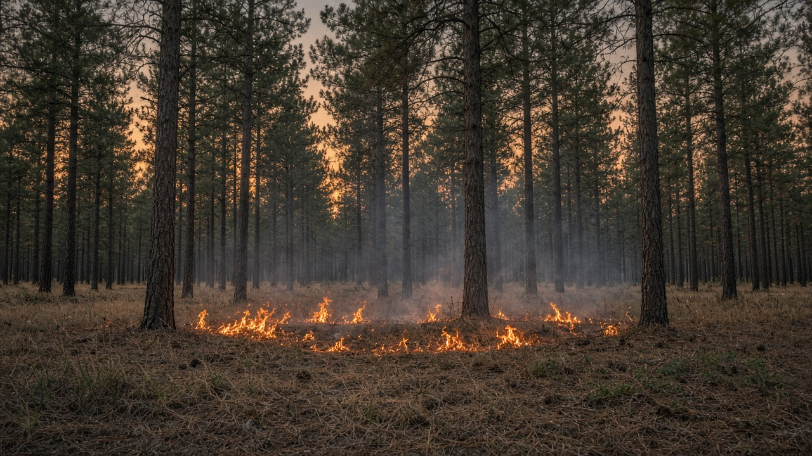
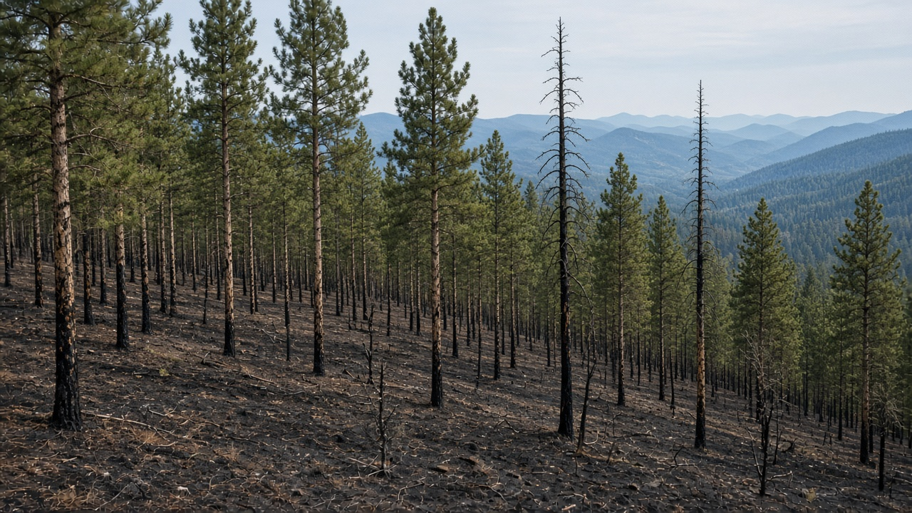
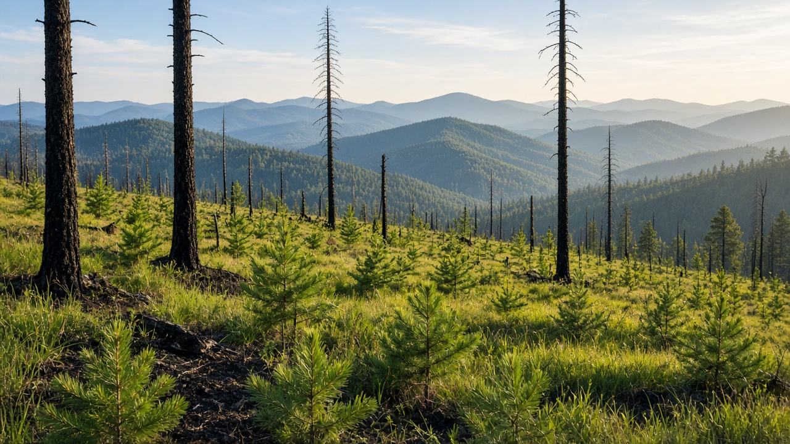

Wildfires, Forest Disturbance, and Regeneration
Published on August 20, 2026

Fire, windthrow, insects, landslides, and flood scour are disturbances that reset patches of forest rather than only destroying them. Many biomes evolved with a characteristic fire regime: frequent low-intensity burns in savanna and dry pine, rare stand-replacing burns in boreal and some eucalypt forests, and almost none in ever-wet rainforest interiors. Fuels, weather, and ignition sources decide whether a fire stays on the surface, climbs into the canopy, or smolders in peat and duff. After fire, regeneration may come from serotinous cones, buried seed, resprouting roots, or seed rain from unburned edges. Treating every flame as a catastrophe ignores this ecology and can lead to fuel build-up, then to rarer but more severe burns when weather finally aligns.
Human ignition, climate drying, and fragmented landscapes have pushed many regions outside their historical disturbance range. Abandoned agricultural fire, roadside sparks, and escaped debris burns start most events in populated mountains. Fire suppression that removes all low-intensity burns lets ladder fuels connect ground to crown. Post-fire salvage that strips all standing dead wood can slow regeneration by removing seed, shade, and erosion control. Conversely, poorly timed prescribed burns or grazing immediately after fire can kill seedlings. Mapping burn severity, remaining seed trees, and soil hydrophobicity guides whether to plant, to rest, or to assist natural recovery. Smoke, slope failure, and water-quality pulses after severe fire are reasons to manage fuels before the extreme weather day, not only to fight the flame.
Integrated disturbance management combines prevention, planned fire where it belongs, rapid response near settlements, and regeneration that follows the site’s own recovery pathway. Fuel breaks along ridges, community watch systems, and closed seasons for burning during high-danger windows reduce escaped fire. In Nepal, dry-season fires in chir pine, sal understory, and grassland belts are often used to flush forage or clear paths; user-group rules that time and contain those burns, and that rest slopes after severe events, fit local ecology better than a total ban that cannot be enforced. Teaching students fire as a process—ignition, fuel, weather, regeneration—turns panic into silviculture. Healthy landscapes usually contain patches of different ages because disturbance, not uniform protection, is how many forests renew themselves.

आगो, हावाले ढाल्ने, कीरा, पहिरो र बाढी खरल वनका प्याच रिसेट गर्ने अवरोध हुन्, केवल नष्ट पार्ने होइनन्। धेरै बायोम विशेषतापूर्ण आगो व्यवस्थासँग विकसित भए: सवाना र सुख्खा सल्लामा बारम्बार कम तीव्रताका डढेलो, बोरेयल र केही युकेलिप्ट वनमा दुर्लभ स्ट्यान्ड बदल्ने डढेलो, र सधैं भिजेको वर्षावन भित्री भागमा लगभग शून्य। इन्धन, मौसम र प्रज्वलन स्रोतले आगो सतहमा रहन्छ, छानो चढ्छ वा पीट र डफमा सुलग्छ भन्ने तय गर्छन्। आगोपछि पुनरुत्पादन सेरोटिनस कोन, गाडिएको बीउ, पुनः पलाउने जरा वा नजलेका किनाराबाट बीउ वर्षाबाट आउन सक्छ। प्रत्येक ज्वालालाई विपत्ति मान्दा यो पारिस्थितिकी बेवास्ता हुन्छ र इन्धन थुप्रिन सक्छ, त्यसपछि मौसम मिल्दा दुर्लभ तर गम्भीर डढेलो।
मानव प्रज्वलन, जलवायु सुकाइ र विखण्डित परिदृश्यले धेरै क्षेत्रलाई ऐतिहासिक अवरोध दायराबाहिर धकेलेका छन्। त्यागिएको कृषि आगो, सडक किनारा झिल्का र भागेका फोहोर डढेलोले बसोबास भएका पहाडमा अधिकांश घटना सुरु गर्छन्। सबै कम तीव्रताका डढेलो हटाउने आगो दमनले भुइँदेखि मुकुट जोड्ने सिँढी इन्धन जम्मा हुन दिन्छ। सबै उभिएको मृत काठ तान्ने आगोपछिको साल्वेजले बीउ, छायाँ र क्षय नियन्त्रण हटाएर पुनरुत्पादन सुस्त पार्न सक्छ। उल्टो, खराब समयको नियोजित डढेलो वा आगोपछि तुरुन्त चराइले बिरुवा मार्न सक्छ। जल्ने गम्भीरता, बाँकी बीउ रूख र माटो जल-विकर्षकता नक्सा गर्दा रोप्ने, विश्राम दिने वा प्राकृतिक फिर्ती सहयोग गर्ने मार्गदर्शन हुन्छ। गम्भीर आगोपछि धुवाँ, भिर असफलता र पानी गुणस्तर तरंग चरम मौसम दिनअघि इन्धन व्यवस्थापन गर्ने कारण हुन्, ज्वालासँग मात्र लड्ने होइन।
एकीकृत अवरोध व्यवस्थापन रोकथाम, जहाँ सुहाउँछ नियोजित आगो, बस्ती नजिक द्रुत प्रतिक्रिया, र स्थलको आफ्नै फिर्ती बाटो पछ्याउने पुनरुत्पादन जोड्छ। रिजसाथ इन्धन ब्रेक, सामुदायिक निगरानी प्रणाली र उच्च खतरा झ्यालमा डढेलोका बन्द यामले भागेको आगो घटाउँछन्। नेपालमा चिर सल्ला, साल तल्लो वन र घाँसे पट्टीका सुख्खा याम डढेलो प्रायः घाँस पलाउन वा बाटो सफा गर्न प्रयोग हुन्छन्; ती डढेलो समय र सीमित गर्ने, र गम्भीर घटनापछि भिर विश्राम दिने उपभोक्ता समूह नियम पूर्ण प्रतिबन्धभन्दा स्थानीय पारिस्थितिकी सुहाउँछन् जुन लागू गर्न सकिँदैन। विद्यार्थीलाई आगोलाई प्रक्रिया—प्रज्वलन, इन्धन, मौसम, पुनरुत्पादन—सिकाउँदा त्रास वनविज्ञान बन्छ। स्वस्थ परिदृश्यमा प्रायः फरक उमेरका प्याच हुन्छन् किनभने धेरै वन एकरूप संरक्षण होइन अवरोधबाट आफू नवीकरण गर्छन्।

आग, पवनपात, कीट, भूस्खलन और बाढ़ खरल वन पैच रीसेट करने वाले विक्षोभ हैं, केवल नष्ट करने वाले नहीं। कई बायोम विशेषतापूर्ण आग व्यवस्था के साथ विकसित हुए: सवाना और शुष्क चीड़ में बार-बार कम तीव्रता की दावानल, बोरेयल और कुछ यूकेलिप्ट वनों में दुर्लभ स्टैंड बदलने वाली दावानल, और सदैव गीले वर्षावन आंतरिक भाग में लगभग शून्य। ईंधन, मौसम और प्रज्वलन स्रोत तय करते हैं कि आग सतह पर रहे, छत्र चढ़े या पीट और डफ़ में सुलगे। आग के बाद पुनरुत्पादन सेरोटिनस शंकु, दबे बीज, पुनः फूटती जड़ों या न जले किनारों से बीज वर्षा से आ सकता है। प्रत्येक ज्वाला को विपत्ति मानना इस पारिस्थितिकी की अनदेखी करता है और ईंधन जमा हो सकता है, फिर मौसम मिलने पर दुर्लभ पर गंभीर दावानल।
मानव प्रज्वलन, जलवायु शुष्कन और विखंडित परिदृश्य ने कई क्षेत्रों को ऐतिहासिक विक्षोभ दायरे से बाहर धकेला है। त्यागे कृषि आग, सड़क किनारा चिंगारी और भागे मलबा दहन बसी पहाड़ियों में अधिकांश घटनाएँ शुरू करते हैं। सभी कम तीव्रता दहन हटाने वाला आग दमन भूमि से मुकुट जोड़ने वाला सीढ़ी ईंधन जमा होने देता है। सभी खड़े मृत काष्ठ खींचने वाला आग पश्चात साल्वेज बीज, छाया और क्षय नियंत्रण हटाकर पुनरुत्पादन धीमा कर सकता है। उलटा, खराब समय की नियोजित दावानल या आग के तुरंत बाद चरान पौधे मार सकते हैं। दहन गंभीरता, शेष बीज वृक्ष और मिट्टी जल-विकर्षकता नक्शा करना रोपें, विश्राम दें या प्राकृतिक वापसी सहायता करें का मार्गदर्शन करता है। गंभीर आग के बाद धुआँ, ढलान विफलता और जल गुणवत्ता तरंगें चरम मौसम दिन से पहले ईंधन प्रबंधन के कारण हैं, केवल ज्वाला से लड़ने के नहीं।
एकीकृत विक्षोभ प्रबंधन रोकथाम, जहाँ सुहाए नियोजित आग, बस्तियों के पास द्रुत प्रतिक्रिया, और स्थल के अपने वापसी पथ का अनुसरण करने वाला पुनरुत्पादन जोड़ता है। रिज के साथ ईंधन विराम, सामुदायिक निगरानी तंत्र और उच्च खतरा खिड़कियों में दहन के बंद मौसम भागी आग घटाते हैं। नेपाल में चीड़, साल अधोवन और घास पट्टियों की शुष्क मौसम आग अक्सर चारा निकालने या रास्ते साफ़ करने को प्रयुक्त होती है; उन दहनों का समय और सीमा करने, और गंभीर घटनाओं के बाद ढलान विश्राम देने वाले उपभोक्ता समूह नियम पूर्ण प्रतिबंध से बेहतर स्थानीय पारिस्थितिकी बैठते हैं जिसे लागू नहीं किया जा सकता। छात्रों को आग प्रक्रिया—प्रज्वलन, ईंधन, मौसम, पुनरुत्पादन—सिखाने पर घबराहट वनविज्ञान बन जाती है। स्वस्थ परिदृश्य में प्रायः भिन्न आयु के पैच होते हैं क्योंकि कई वन एकरूप संरक्षण नहीं विक्षोभ से स्वयं नवीकृत होते हैं।